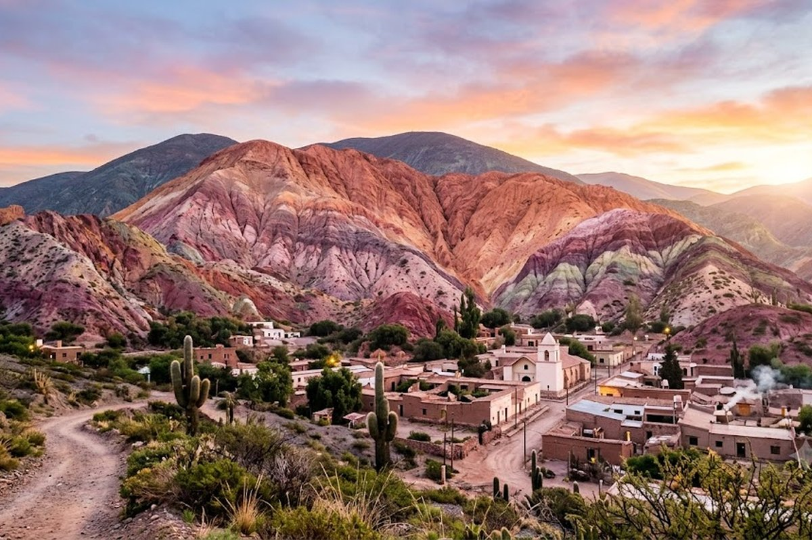
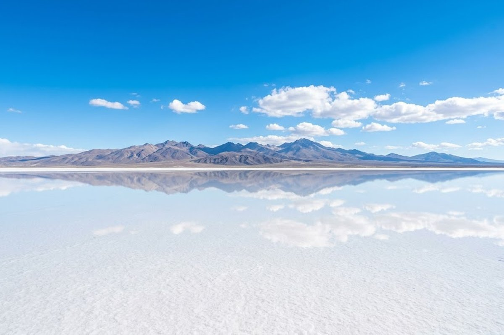
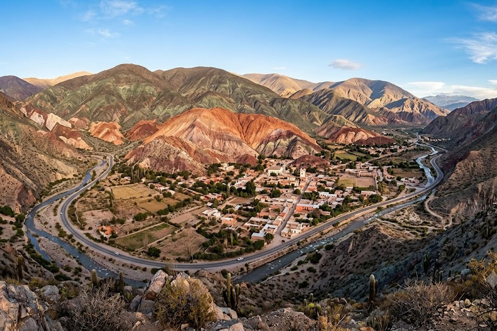
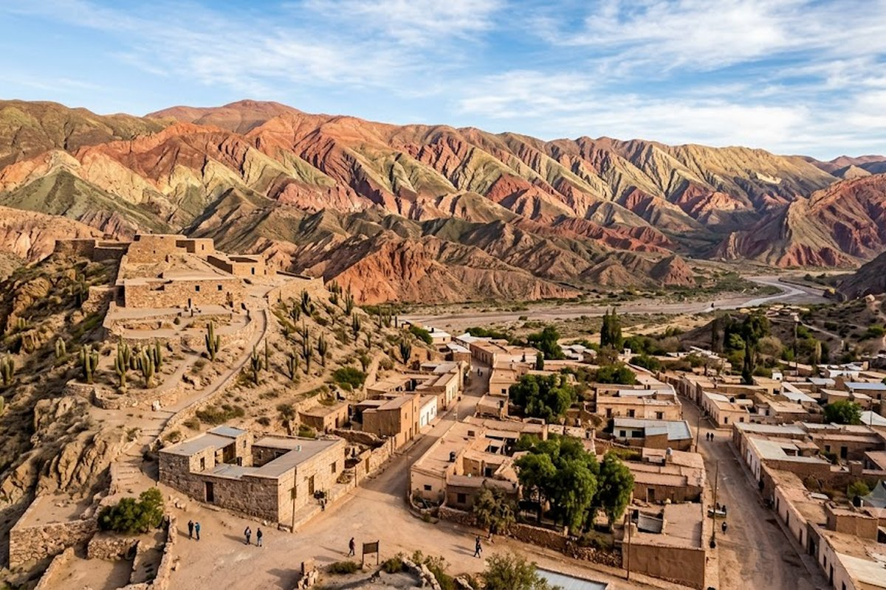

La Argentina que pocos conocen. Cerros de 7 colores, salares infinitos, pueblos prehispánicos y una cultura que tiene más de 10.000 años.
Jujuy es un destino que cambia con cada curva del camino. La Quebrada de Humahuaca — declarada Patrimonio de la Humanidad por la UNESCO — despliega una paleta de colores que parece digital: rojos, ocres, violetas, verdes y blancos que cambian con la luz del día. Purmamarca con su Cerro de los Siete Colores, Tilcara con su Pucará prehispánico, y las Salinas Grandes a 3.400 msnm son tres de las postales más icónicas de Argentina.



La postal más famosa de Argentina. Los siete colores del cerro frente a Purmamarca cambian con la luz — amanecer y atardecer son los mejores momentos.
El desierto blanco a 3.450 msnm con el cielo más azul que vas a ver en tu vida. El espejo de sal y las fotos de perspectiva son obligatorias.
Fortaleza prehispánica de los Omaguacas en lo alto de un cerro. Vistas a toda la Quebrada y al río Grande.
Los carnavales del NOA son los más auténticos de Argentina: comparsas, música andina, desentierro del diablo y celebraciones que duran semanas.
Desde Salta, el Tren a las Nubes llega hasta la Puna jujeña cruzando viaductos impresionantes a más de 4.000 msnm.
Artesanías andinas, tejidos, cerámicas y especias. El mercado frente a la iglesia es el más pintoresco del norte argentino.
La puna jujeña está entre 3.000 y 4.500 msnm — el soroche (mal de altura) es real. Los primeros días tomá las cosas con calma, no hagas esfuerzo físico intenso, hidratate mucho y el mate de coca que te ofrezcan en el hotel, acéptalo. También: las Salinas Grandes al mediodía tienen un sol brutal — llevá protector solar 50+, anteojos de sol y agua.
Jujuy vs Salta: Son destinos distintos y complementarios. Salta tiene más ciudad y gastronomía; Jujuy tiene la Quebrada y las Salinas. Lo ideal es combinarlos: 2-3 noches en Jujuy + 2-3 noches en Salta. Lo armamos como un solo circuito.
¿Jujuy es lo mismo que Salta o son destinos distintos?
Son distintos y complementarios. Salta tiene más ciudad, gastronomía y acceso a los Valles Calchaquíes. Jujuy tiene la Quebrada de Humahuaca (UNESCO), las Salinas Grandes y los carnavales más auténticos. Muchos viajeros combinan los dos en un solo viaje.
¿La Quebrada de Humahuaca vale el viaje?
Absolutamente. Es uno de los paisajes más únicos de América del Sur — declarado Patrimonio de la Humanidad por la UNESCO en 2003. El Cerro de los Siete Colores en Purmamarca solo ya justifica el viaje.
¿Cuándo son los carnavales?
En enero y febrero, con el pico en los fines de semana de carnaval (fecha variable según el año). Los carnavales de Humahuaca y Tilcara son los más auténticos del país — absolutamente distintos al carnaval de cualquier otra ciudad argentina.
¿Se puede combinar con Salta?
Sí, y es lo más recomendable. Están a 90 km y comparten aeropuerto (el vuelo llega a Salta). Lo ideal es 2-3 noches en Jujuy y 2-3 en Salta para ver lo mejor de los dos destinos.
Armamos tu viaje al norte argentino con todo incluido.
💬 Consultar con Gemicheck